Saltar al contenido
Vídeos
Vídeos y repertorio
Escucha el violín en directo
Explora actuaciones y repertorio para distintos momentos del evento. Encontrarás piezas clásicas, canciones románticas, temas de cine y música para el cóctel. Si tenéis una canción en mente, podéis enviármela al consultar vuestra fecha.
Experience × Interstellar
Ludovico Einaudi · Hans Zimmer · Montjuïc, Barcelona
Todo
Clásica
Romántica
Cine
Cóctel
24 vídeos
Clásica
Ceremonia · Violín solo
Palladio
Karl Jenkins · Barcelona
Cóctel
Cóctel · Violín solo
Sarà perché ti amo
Ricchi e Poveri · Barceloneta, Barcelona
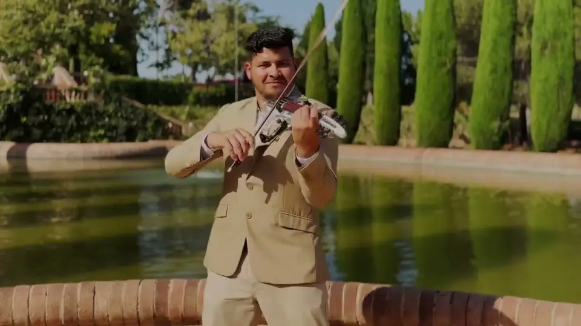
Romántica
Ceremonia · Violín solo
Janam Janam
Pritam · «Dilwale»
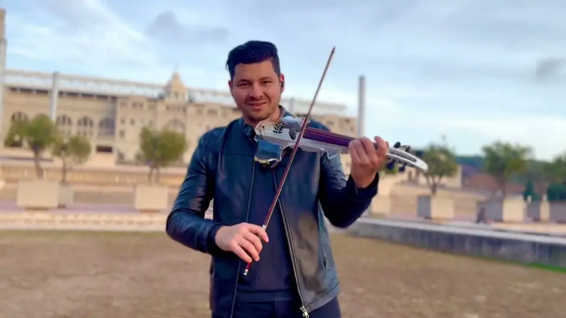
Cóctel
Fiesta · Violín solo
Don’t Stop Me Now
Queen
Romántica
Banquete · Violín solo
Caruso
Lucio Dalla
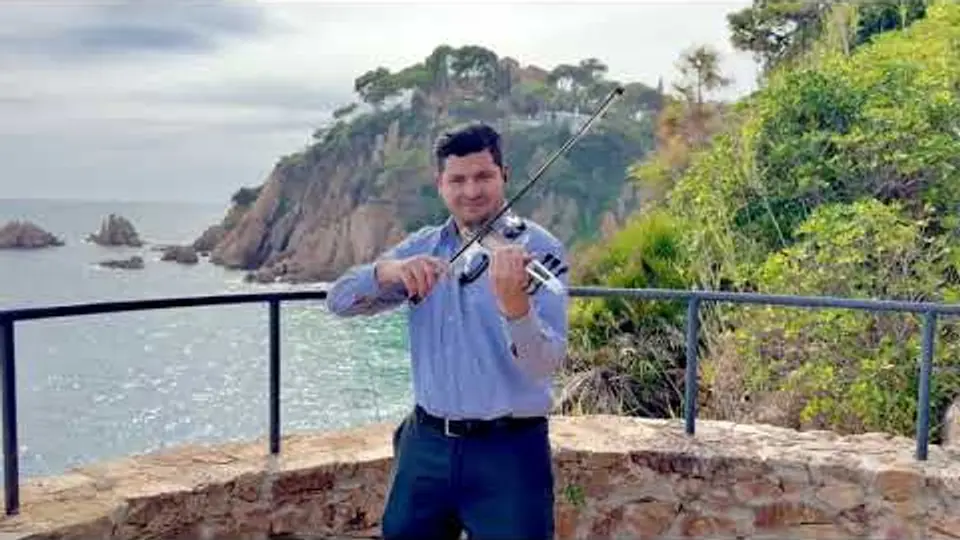
Cóctel
Cóctel · Violín solo
Felicità
Al Bano & Romina Power
Clásica
Ceremonia · Violín solo
Concierto de Aranjuez
Joaquín Rodrigo
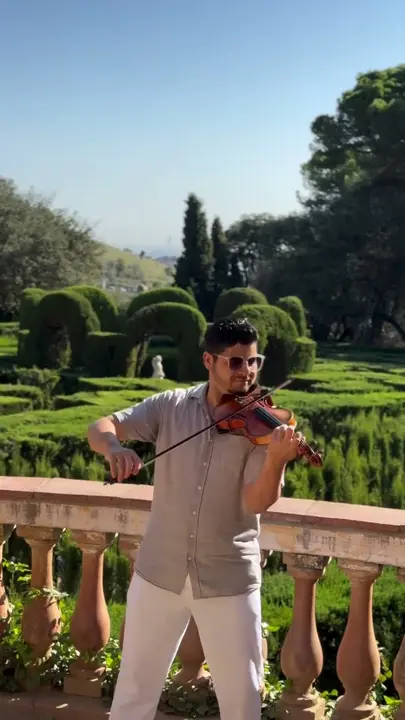
Romántica
Ceremonia · Violín solo
Mariage d’amour
Paul de Senneville · Laberint d’Horta, Barcelona
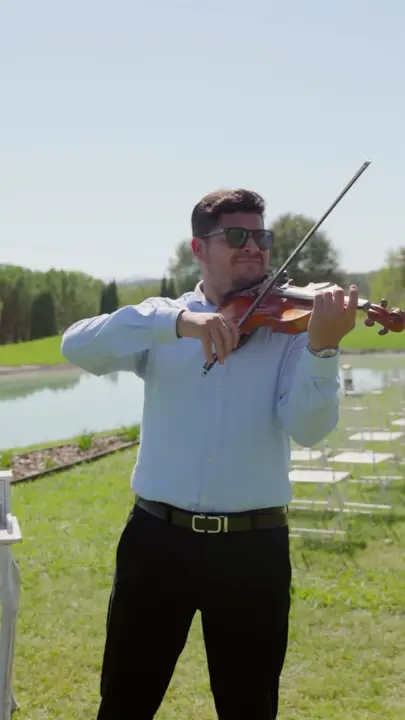
Romántica
Ceremonia · Violín solo
Only Time
Enya
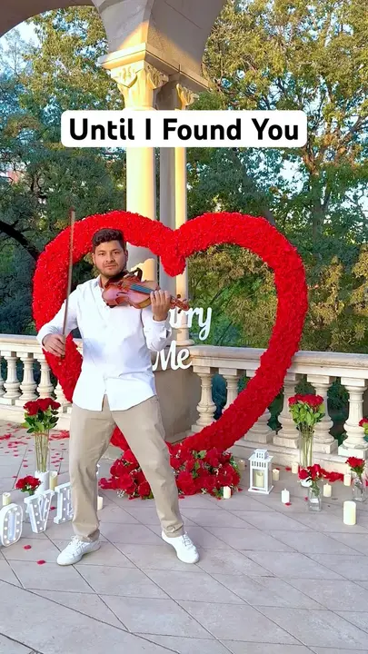
Romántica
Ceremonia · Violín solo
Until I Found You
Stephen Sanchez
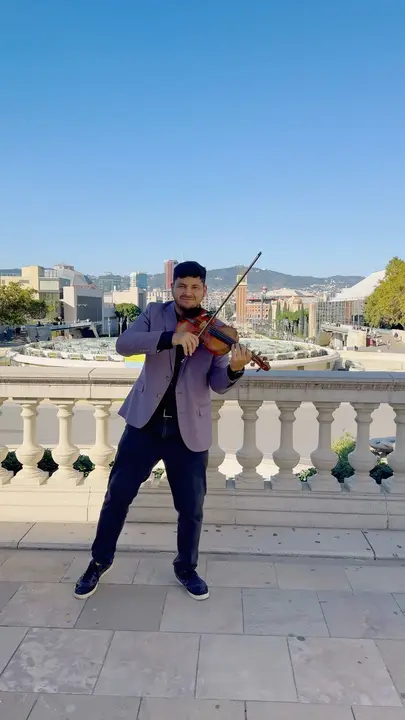
Romántica
Banquete · Violín solo
I Have Nothing
Whitney Houston
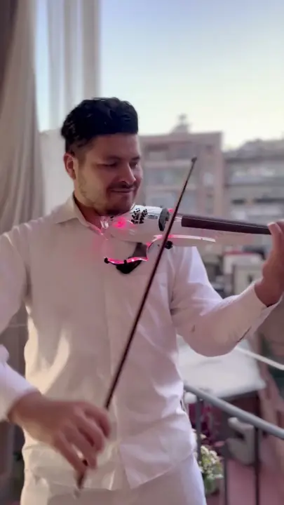
Romántica
Banquete · Violín solo
Right Here Waiting
Richard Marx
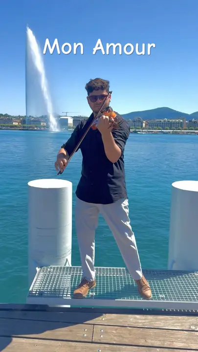
Romántica
Cóctel · Violín solo
Mon Amour
Slimane
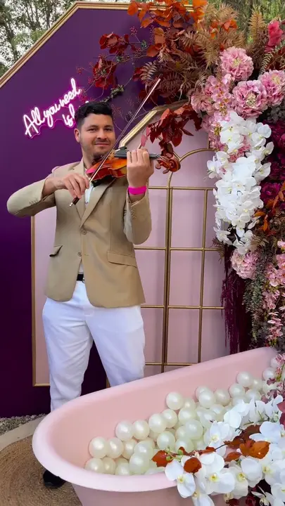
Cine
Ceremonia · Violín solo
Beauty and the Beast
Alan Menken
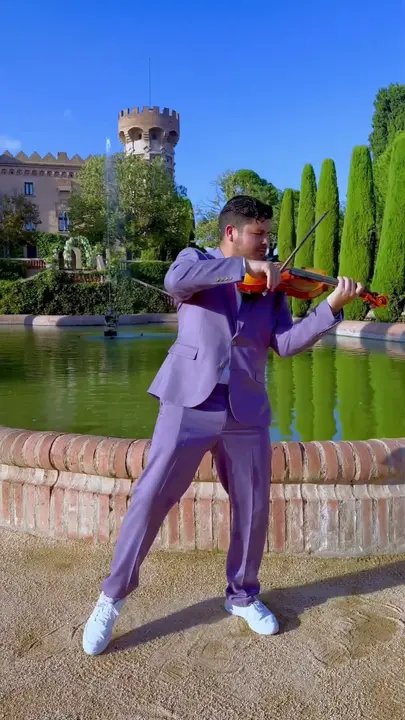
Cine
Ceremonia · Violín solo
Now We Are Free
Hans Zimmer · «Gladiator»
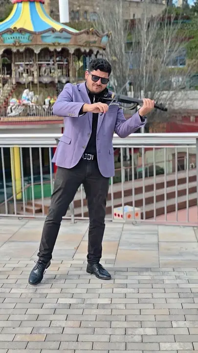
Cine
Ceremonia · Violín solo
Conquest of Paradise
Vangelis
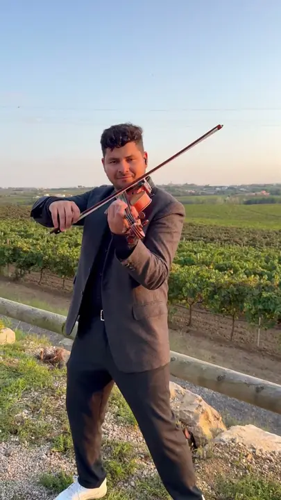
Cine
Fiesta · Violín solo
Game of Thrones
Ramin Djawadi
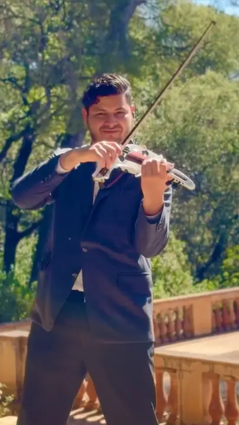
Cine
Cóctel · Violín solo
Pure Imagination
«Willy Wonka»
Cóctel
Cóctel · Violín solo
Corazón partío
Alejandro Sanz
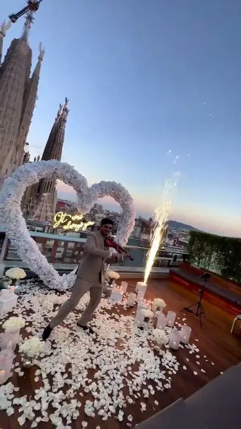
Cóctel
Cóctel · Violín solo
Sway
Pablo Beltrán Ruiz
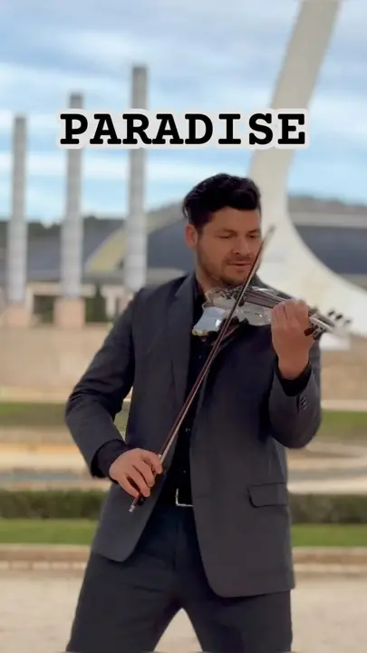
Cóctel
Fiesta · Violín solo
Paradise
Coldplay
Cóctel
Banquete · Violín solo
Fix You
Coldplay
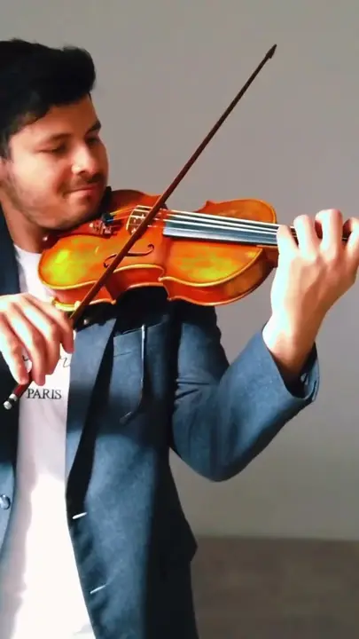
Cóctel
Cóctel · Violín solo
All You Need Is Love
The Beatles
Cóctel
Cóctel · Violín solo
Non, je ne regrette rien
Édith Piaf
Repertorio
Repertorio
Toca un título para escucharlo
Una muestra de las piezas que he grabado. El repertorio para cada evento se prepara con vosotros.
01 · Cine
Experience × Interstellar
02 · Clásica
Palladio
03 · Cóctel
Sarà perché ti amo
04 · Romántica
Janam Janam
05 · Cóctel
Don’t Stop Me Now
06 · Romántica
Caruso
07 · Cóctel
Felicità
08 · Clásica
Concierto de Aranjuez
09 · Romántica
Mariage d’amour
10 · Romántica
Only Time
11 · Romántica
Until I Found You
12 · Romántica
I Have Nothing
13 · Romántica
Right Here Waiting
14 · Romántica
Mon Amour
15 · Cine
Beauty and the Beast
16 · Cine
Now We Are Free
17 · Cine
Conquest of Paradise
18 · Cine
Game of Thrones
19 · Cine
Pure Imagination
20 · Cóctel
Corazón partío
21 · Cóctel
Sway
22 · Cóctel
Paradise
23 · Cóctel
Fix You
24 · Cóctel
All You Need Is Love
25 · Cóctel
Non, je ne regrette rien
Proponer una canción
¿Tenéis una canción en mente?
Enviádmela al consultar vuestra fecha: indicad el título y la versión.
Amador •
Violinist
Violín en directo para bodas y eventos en Barcelona, Madrid y otros destinos de España.
© 2026 AMADOR • Violinist — David Amador
Privacidad Preferencias de privacidad
Web por Wendel Silva
Tu privacidad
Esta web no utiliza cookies propias ni de análisis. Los vídeos se reproducen desde YouTube (modo de privacidad mejorada), que puede usar sus propias cookies, y solo se cargan cuando pulsas para verlos. Más información en la Política de privacidad .
Permitir vídeos de YouTube
Solo esenciales